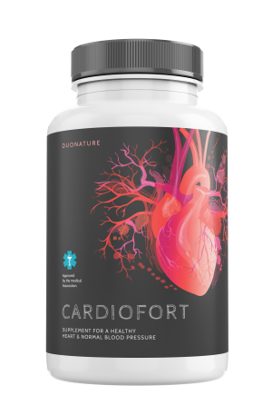

eliminación de depósitos de los intestinos, desintoxicación, detiención el apetito excesivo lo que aproximadamente 5 kg menos de peso
¡La era del exceso de peso ha terminado!
Una mujer mexicana ha desarrollado un método para
adelgazar - 14 kg en 1 mes sin ayuno, sin ejercicio, sin el efecto rebote.
Los nutricionistas están temblando por su trabajo. ¿Dejará el nuevo método de pérdida de peso a miles de personas sin trabajo? Los nutricionistas destacados no tienen ninguna duda al respecto. El avance tan esperado en la lucha contra la obesidad llega con el desarrollo de una fórmula natural para adelgazar por una profesora mexicana.
Más de 14.000 personas ya han perdido un promedio de 14 kg en 28 días, sin ningún esfuerzo, de forma segura y sin el efecto rebote. Como resultado, redujeron el riesgo de ataque cardíaco y accidente cerebrovascular en un 185%, redujeron el nivel de colesterol malo en 15 veces y se protegieron de la aterosclerosis. Recuperaron su atractiva figura, confianza en sí mismos y excelente estado. ¿Cómo es posible?
La profesora Juana García Makel (experta en biología molecular y medicina naturopática) decidió curar a su esposo de la obesidad progresiva y los complejos. Este fue el comienzo de la revolución del sobrepeso. Después de un año de investigación de laboratorio de vanguardia, la profesora ha desarrollado una fórmula adelgazante natural, segura y fácil de usar. Gracias a la fórmula, su marido perdió 26 kg en menos de dos meses y, como admite con orgullo, "¡ahora parece un modelo!"
Las revistas médicas profesionales ya han nombrado este tratamiento un logro pionero en dietética, y la profesora Juana García Makel ya ha recibido varios premios prestigiosos por su descubrimiento científico. Gracias a la acción de su fórmula, incluso las personas con un gran sobrepeso (independientemente de sus causas) pueden perder unos 14 kg en 1 mes, de manera efectiva, sin pasar hambre ni hacer ejercicios.
¡La dieta es una tortura y el dinero perdido! ¿Cuáles son las razones de esta suposición?
Estas palabras son confirmadas por más de 14 mil consumidores satisfechos de la fórmula natural para adelgazar que ya se han sometido al procedimiento y disfrutan de una figura esbelta. Es por eso que decidimos examinar bajo el microscopio las dietas de pérdida de peso conocidas anteriormente. O más bien, para comprobar por qué no traen los resultados deseados. Aquí están las conclusiones:
-
La mayoría de las dietas son hechas por aficionados
Para perder 2 kg de forma permanente, debe ayunar durante un promedio de 2,5 meses.Esto significa que con el fin de alcanzar el peso deseado, puede pasar varios años....Al negar los placeres y luchar contigo mismo, resistirte a la tentación de comer tu pizza, postre o pastel favorito. Esto se debe a que el 98% de los programas de dieta son creados por aficionados. Son personas que no tienen idea de cómo funciona el cuerpo, el sistema digestivo y la alimentación en general. Estas dietas son dañinas para el cuerpo, peligrosas para la salud y completamente ineficaces.
-
La dieta debilita el cuerpo y reduce la inmunidad.
La dieta conduce a una deficiencia de vitaminas y minerales. El cuerpo está perdiendo energía, lo que nos hace sentir cansancio, irritacion y somnolencia. La resistencia del cuerpo a los virus y las bacterias se reduce drásticamente, lo que nos hace contraer enfermedades fácilmente.
-
Los alimentos dietéticos son peligrosos para la salud
Los fabricantes de alimentos atraen a los clientes con alimentos "saludables". Desafortunadamente, incluso si tiene un alto contenido de fibra, está cargado de azúcar, que se sabe que causa obesidad más rápido que las hamburguesas. Los alimentos sin azúcar, por otro lado, contienen aspartamo cancerígeno.!
-
La dieta significa hambre constante, sacrificio y remordimiento.
Luchar constantemente contra el apetito y negarte el placer de comer es irresistible. Por otro lado, las situaciones en las que un apetito descontrolado nos desgarra durante una cena familiar o con amigos son causa de dolorosos remordimientos.
-
La dieta requiere mucho dinero
La supervisión mensual de un dietista cualificado incluye costes de hasta 12500 pesos. Y todos los alimentos dietéticos, bajos en calorías y "saludables" son simplemente caros. Como resultado, gastamos en alimentos "dietéticos" 4 veces más dinero, que de costumbre. Para mantener el peso, tendríamos que comer así toda la vida. Ninguna billetera puede aguantarlo.
-
Después de la dieta se produce el efecto yo-yo o recuperación del peso al tiempo de terminar la dieta.
El cuerpo, debilitado por el hambre, automáticamente comienza a acumular reservas de energía en un momento posterior, por lo que el metabolismo se ralentiza, hasta que se detiene por completo. Como resultado, después de una dieta, el cuerpo vuelve a su peso anterior aún más rápido, de lo que perdiste peso.
Por lo tanto, la fórmula de pérdida de peso de la profesora Juana García Makel es un verdadero avance en la lucha por una figura esbelta.
Las dietas para adelgazar le quitan salud, energía y mucho dinero a una persona. Tienes que contar constantemente las calorías, hacer un seguimiento de los horarios de las comidas y negarte el placer de comer. A esto se suma el hambre agonizante, la fatiga y el agotamiento. Pagamos un precio tan alto por... la decepción, porque las consecuencias suelen ser insignificantes. Casi de inmediato, se produce el efecto yo-yo, que anula todos los esfuerzos y sacrificios a largo plazo.
La fórmula adelgazante natural de la profesora Juana García Makel funciona al revés. No tienes que negarte nada, ver qué y cuándo comes o sufrir de hambre constante. La quema de grasa ocurre automáticamente. Como describe uno de los participantes: ¡Estás perdiendo peso frente al televisor! Además, el tratamiento restaura el metabolismo y bloquea el efecto yo-yo para siempre. ¡Y todo cuesta menos que una lata de cola al día!
Cualquiera puede ahora perder peso de forma fácil, rápida y segura
La fórmula adelgazante de la profesora Juana García Makel ya está disponible en el comercio minorista,se llama Fortunella en cápsulas. El medicamento esta disponible en cápsulas, que deben beberse con abundante agua (que además proporciona una porción de hidratación, que es tan importante para el buen estado del cuerpo). Su uso es absolutamente seguro, lo cual ha sido probado por investigaciones adicionales del American Research Center en Houston. Estos estudios también mostraron que la eficiencia del tratamiento es superior al 98%. Gracias a esto, las personas entre las edades de 38 y 93 tan sólo en 28 dias han perdido un promedio de 14 kilogramos". Independientemente de la edad, duración y las causas del exceso de peso.
Eficacia probada
Apenas unas horas después del primer uso, los participantes comenzaron a limpiar sus cuerpos de toxinas, gracias a lo cual suprimieron el apetito excesivo y pudieron entrar en una fase de intensa quema de calorías. Los participantes dejaron de comer bocadillos en los días posteriores debido al estrés, y así superaron completamente los ataques de hambre. Luego, día tras día, vieron que la bascula indicaba menos kilogramos, y ¡su circunferencia de cintura y caderas se reduce unos centímetros por día!
Pero eso no es todo. Disminuyó el nivel de colesterol malo y azúcar. Los participantes tenían en promedio 3 veces más energía y 5 veces mejor estado de ánimo que antes de usar la formula de la Prof. García Makel
Los resultados del tratamiento documentados hablan por sí mismos:
reducción del hambre, mejora del metabolismo, quema más rápida de calorías lo que aproximadamente 4 kg menos de peso
quema de grasa automática, reducción de colesterol y azúcar, otros 3 kg menos
3 veces más energía, ajusta el metabolismo y bloquea el efecto yo-yo, aproximadamente 2 kg menos (en total 14 kg en 1 mes)
1. semana
2. semana
3. semana
4. semana
1 semana - eliminación de depósitos del intestino, limpieza de toxinas, desaparición del exceso de apetito, aproximadamente 5 kg menos
2 semana - reducción del hambre, mejora del metabolismo, quema acelerada de calorías, aproximaddamente 4 kg menos de peso
3 semana - quema automática de grasas, reducción de colesterol y azúcar, otros 3 kg menos
4 semana 3 veces más de energía, ajusta el metabolismo y bloquea el efecto yo-yo, aproximadamente 2 kg menos (en total 14 kg en 1 mes)
Guadalupe Hernández (33) de Tijuana es una de las primeras en México en perder peso con Fortunella:

Hasta hace poco, me avergonzaba de mis pliegues grasientos y los cubría con capas de ropa suelta. Intenté muchas veces bajar de peso, sin éxito. Incluso fui a un nutricionista. Gasté una parte importante de mis ahorros en visitas, pero no me ayudó. Tuve que admitir cada galleta consumida y cada copa de vino bebida. ¿Ejercicio? ¿Qué quieres decir con que estoy agotada después de un día en el trabajo y todavía tengo que hacer ejercicio en el gimnasio? ¿Y quién se encargará de la casa, los niños, el perro? Acabo de enterarme de Fortunella. Ahora sé que "Si no me hubiera sometido a este tratamiento, habría cometido el error de mi vida. Estaba gorda como una ballena y solo me tomó 4 semanas para adelgazar y ahora me veo más delgada que mi sobrina adolescente. No moví un dedo, solo tomé las cápsulas a la hora indicada. Pasé de la talla 44 a la 38, obtuve confianza en mí misma y ahora me siento genial. Mis compañeras de trabajo están envidiosas de mi buena figura. ¡Altamente recomendado!"
¿Por qué tener sobrepeso o ser torturado cuando puedes adelgazar de forma tan fácil, rápida y económica?
La fórmula adelgazante ha sido probada sin lugar a dudas por el American Research Center en Houston. La profesora Juana García Makel recibe constantemente críticas positivas de destacados expertos, así como prestigiosos premios por sus investigaciones y logros científicos.
La buena noticia es que puede obtener la fórmula adelgazante Fortunella 765 pesos más barato. Oferta especial válida hasta . El tratamiento se puede obtener a través del siguiente sitio web.

La oferta especial es válida hasta


Comentarios
Lea los comentarios sobre el artículo "¡Es el fin de la era del sobrepeso! Una mujer mexicana ha creado un sistema de tratamiento..."
Gabriel
Y dicen que a los mexicanos no les va bien a escala mundial. Bravo a nuestra compatriota
Teresa
Usé estas cápsulas para bajar de peso, por participar en la prueba me regalaron una tajerta de descuento al club, ¡me costo tan poco dinero y ademas perdí peso! Me siento como nueva
Angelica
También lo intenté y adelgace, a pesar de mi tendencia genética a tener sobrepeso. Es tan simple, ya he descrito las reseñas en mi blog y lo recomiendo a todos:)
Carolina 1992
Tomé muchos suplementos dietéticos para bajar de peso, por supuesto, nada me ayudó, solo he perdido mi dinero. Pero aquí puedo decir honestamente que este es el primer método que me ayudó. Solo lo uso durante una semana, pero por la noche dejé de comer en exceso y mi apetito disminuyó. Como menos y me siento más saludable. Y puedo comer lo que quiera. Y perdí más de 4 kilogramos, y mi celulitis desapareció, ¡no puedo esperar a la cuarta semana!
Manuel G.
Digo porque llevo 7 años luchando contra la obesidad. Sabes, como chico, me gusta beber cerveza y comer algo delicioso. Mi esposa se quejaba todos los días para que hiciera algo al respecto, porque tenía el colesterol alto y estar gordo no es saludable. Luego mi hija me trajo estas cápsulas de Estados Unidos y las probé para mi tranquilidad. Pero no he cambiado mi estilo de vida. He perdido 10 kg en 3 semanas y mis resultados son normales. Entonces me volví más saludable y libre de los reclamos de mi esposa.
Ricardo
También ya he probado las cápsulas Fortunella y me han beneficiado. He estado tomando las cápsulas solo durante dos semanas, pero ya tengo los pantalones bastante sueltos. Compruébelo usted mismo, porque todavía no he visto ningún comentario negativo sobre este método para perder peso.
maricarmen32
No esperaba leer comentarios tan maravillosos cuando llegué a este sitio. Entonces necesito este tratamiento. Estoy harta de mi horrible barriga y mis gruesos muslos. ¡Finalmente algo funciona!
María Martínez
Hace 30 días pesaba 78 kg, y hoy 66 kg. Te aconsejo que hagas tu pedido durante la promoción.
Diego
Hoy en día, todo el mundo tiene depósitos y toxinas en los intestinos. No es sorprendente que una de cada dos personas tenga sobrepeso. Es bueno que exista un método que limpie y queme grasa.
Mafernanda
@Franco muchas gracias por tu respuesta. También me arriesgaré y lo intentaré, al final no perderé nada...
Franco
@Mafernanda, sí por ejemplo yo. Para mí es por herencia, todos somos gordos. Bueno, después de 3 semanas con Fortunella, ya no encajo con mi familia:)
Mafernanda,
Tengo una pregunta, ¿qué usaste? ¿Alguien aquí ha tenido sobrepeso desde la infancia (desde nacimiento) y ha adelgazado?
claramar1989
Perdí 15 kg con el tratamiento de la profi:) Les recomiendo
Elizabeth R.
Me gustaría aprovechar esto de inmediato, pero me preocupa si realmente funciona. Ya he gastado suficiente dinero en técnicas ineficaces.
Sarah
¡¡Guauuu!! Acabo de leer que este tratamiento garantiza una triple satisfacción, así que no te preocupes. Aprendo de mi propia experiencia, tal vez me ayude:)
Miguelacho
mi mamá perdió peso con estas cápsulas después de 20 años de serios problemas de sobrepeso
Gauchiman49
Estoy esperando mi pedido, pronto escribiré sobre los efectos.